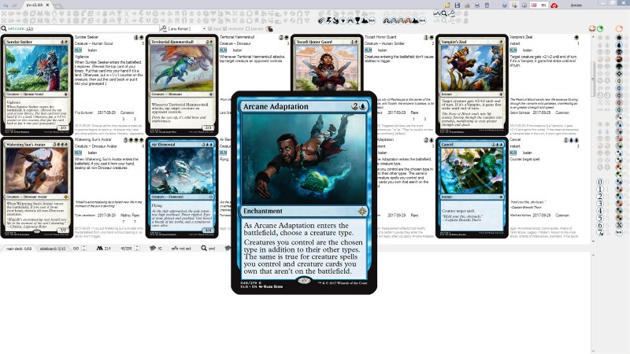
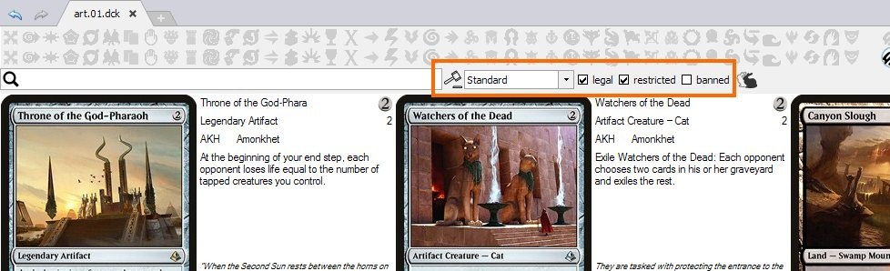
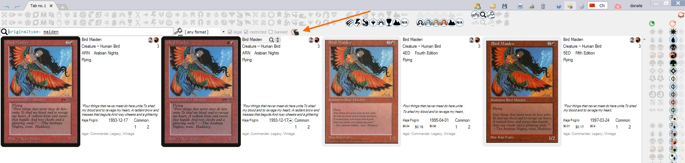
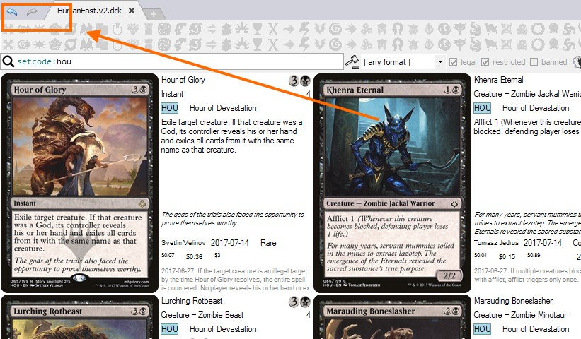
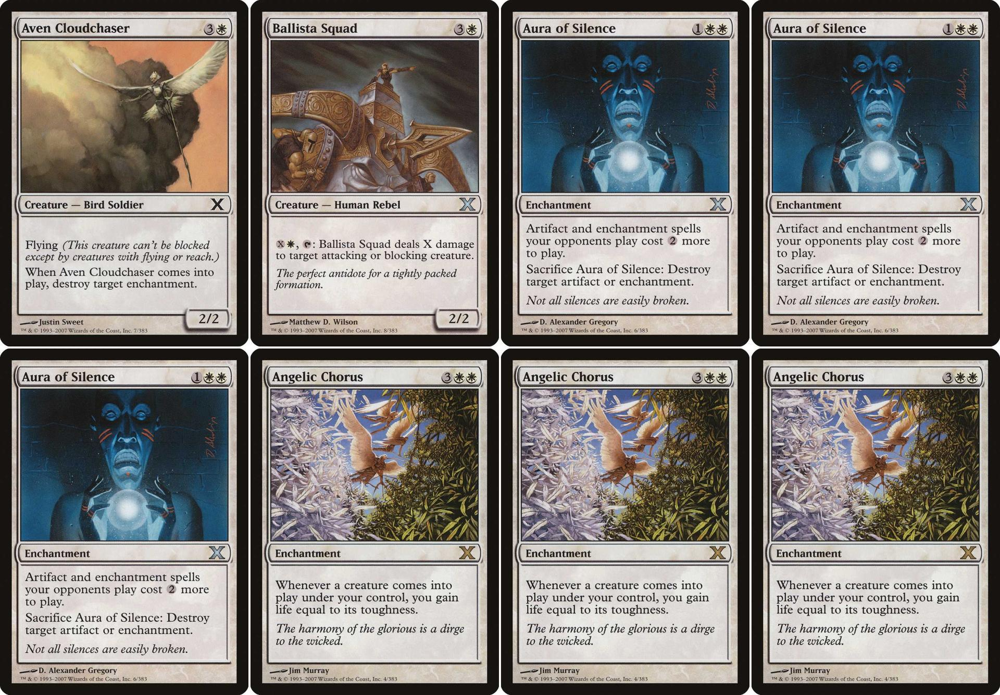

Mtgdb.Gui is a Windows application to search MTG cards, build decks and keep track of collection. It is free and opensource.
Forum thread to get support or sumbit your feedback
| feature | illustration |
|---|---|
| Database contains all MTG sets up to Ixalan and Commander 2017 |  |
Built-in update. Images, data and the program itself are updated from Update window |
 |
| Import collection from Magic The Gathering Online. You can also load and save decks in MTGO-compatible format. | details |
| Drag-n-drop and copy-paste deck to instantly import deck from websites and external applications. | details |
| Deck editor | details |
| Collection editor | details |
| Supported deck formats | |
| Forge | |
| Magarena | |
| XMage | |
| Magic The Gathering Online | |
| Cockatrice supports the deck format used by Magarena | |
| Riiak's DotP 2014 Deck Builder v1.5.0.3. patched version supports Forge deck format | |
| Filters | |
One-click filter buttons let you instantly filter cards by common properties such as abilities Flying, Haste, type, manacost and so on. details |
 |
| Search by text in Lucene query language. Search string supports syntax highlighting and intellisense. details |  |
| Filter by legality |  |
| Filter by cards in your collection |  |
| Filter by cards in your deck | |
| Choose between AND / OR operators to combine filters | |
Show or hide card duplicates in search result. Namesakes can be confusing when creating a deck or building some statistics. But sometimes you want to put into your deck a specific version of a beautiful island. Check Show duplicates button to show all variants of a card. |
 |
| Sort by most fields, sort by multiple fields. details |  |
| Statistics charts. details |  |
| Zoom. details | |
| Showing card back for flipped cards or meld pair / melded card for meld cards | details |
| Undo / redo changes in deck, filters and so on. Works even after closing the program and starting it again. details |  |
| Card text translations to all languages supported by Gatherer. Including russian, spanish, portugal and etc. | |
| Printing proxies is supported by exporting deck to images printable on A4 paper |  |
| Tooltips on most user interface elements | |
| Search result highlighting |  |
| Using images from Mtgdb.Gui in Forge. With High Quality images enything gets prettier :) | details |
| Using card images you already have with Mtgdb.Gui | details |
| Showing the last card added / removed to deck in search result even if it doesn't matches filter | The people who used Magic Duel's online deck builder will understand me. It is such an annoying thing when you have a filter, then you remove a card, and you cannot quickly undo as the card disappears from search result. This is not going to happen in Mtgdb.Gui! |
| This help can also be considered a feature worth mentioning |
{kind=link}
{kind=link}
{kind=link}
{kind=link}
{kind=link}